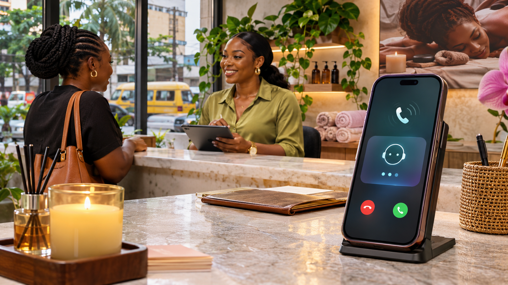

The calls you miss could be bookings your competitors receive
It is 8:45 p.m. A customer has finally found time to plan a surprise spa day. They call your business. No answer. They try again, then send a WhatsApp message: “Do you have an opening on Saturday?”
Your team has closed. The message sits there. The customer may not wait until morning: they find another spa, get a reply and book. By the time your team responds, they could be choosing massage oil somewhere else.
One missed call does not always mean a lost sale. But every unanswered enquiry is an opportunity that may go elsewhere, and those opportunities can add up.
The short answer: how much does it cost?
There is no single AI receptionist price for every Nigerian business. A quote depends on the call flow, usage, phone provider, booking connections and support. Expect to discuss a setup fee and potentially ongoing software, call-minute, AI usage and integration charges. Request an itemised quote before committing.
What does an AI receptionist do?
An AI receptionist can answer calls, use approved business information to respond to common questions, collect contact details and route enquiries. Depending on the chosen tools and integrations, it may help with booking requests or pass them to your team. It needs accurate information, clear rules, testing and a route to a real person.
What affects the price?
- Setup: conversation design, business information, configuration and testing.
- Phone and voice: provider availability, compatible numbers, call minutes and speech processing.
- Software and AI: subscriptions and usage-based charges.
- Integrations: connecting a calendar, booking system or CRM where supported.
- Ongoing support: updating information, reviewing responses and improving the workflow.
What could it look like for a hotel?
A guest calls on Sunday evening to ask about rooms. The assistant answers with approved information, collects the guest's travel dates and contact details, and routes the request to reservations. If an appropriate booking integration is available, it may help with the next step.
If it cannot reliably answer, it should arrange a human follow-up. Nobody wants an AI confidently promising a sea view when the room faces the generator.
What about WhatsApp chats?
Customers also ask about prices, directions and availability on WhatsApp. An assistant can use approved information to answer common questions, collect useful details and pass important conversations to your team. Capabilities depend on your account, provider and setup.
Prefer to learn the setup yourself? Explore our WhatsApp AI setup guides. WTB can also help plan call and WhatsApp workflows around your business. See our guide to WhatsApp AI agents and WhatsApp chatbot costs.
Will it replace my receptionist?
Not necessarily. Think of it as support for the hours and moments your team cannot answer. People remain important for complaints, sensitive information, unusual requests and conversations requiring judgement.
Is it right for your business?
It may be worth exploring if you run a hotel, spa, clinic or other booking-led business and frequently miss calls, receive repeat questions or struggle with enquiries after hours. Confirm compatibility with your provider and booking process before buying.
Stop letting enquiries ring out
WTB can help you plan an AI receptionist and WhatsApp assistant around your services, opening hours, booking process and human handover. Tell us how your business handles calls and chats and we will recommend a suitable setup and prepare a quote.